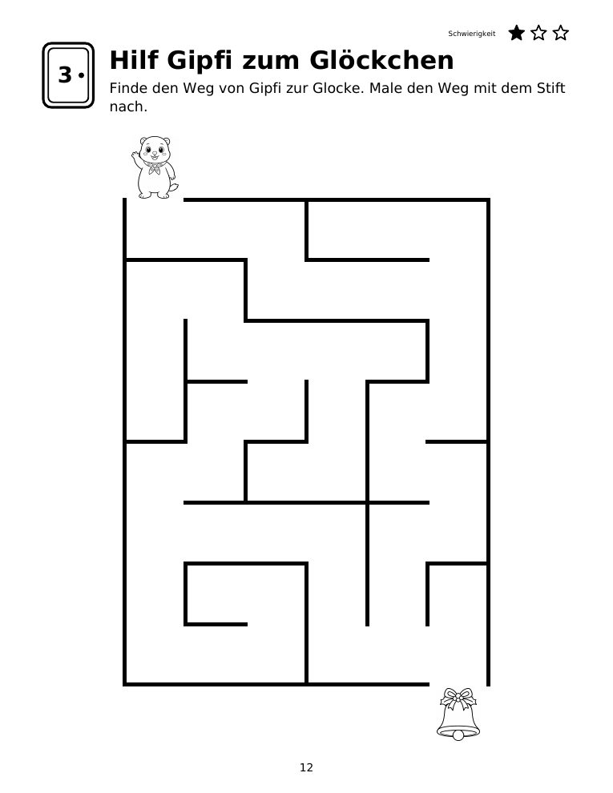
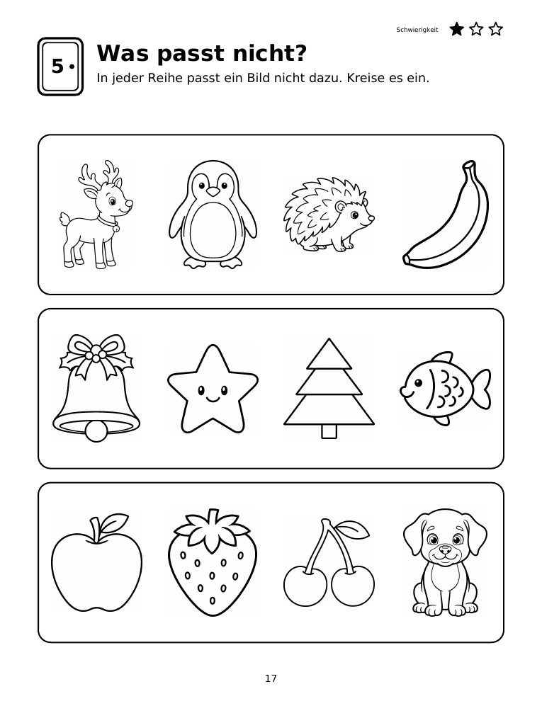
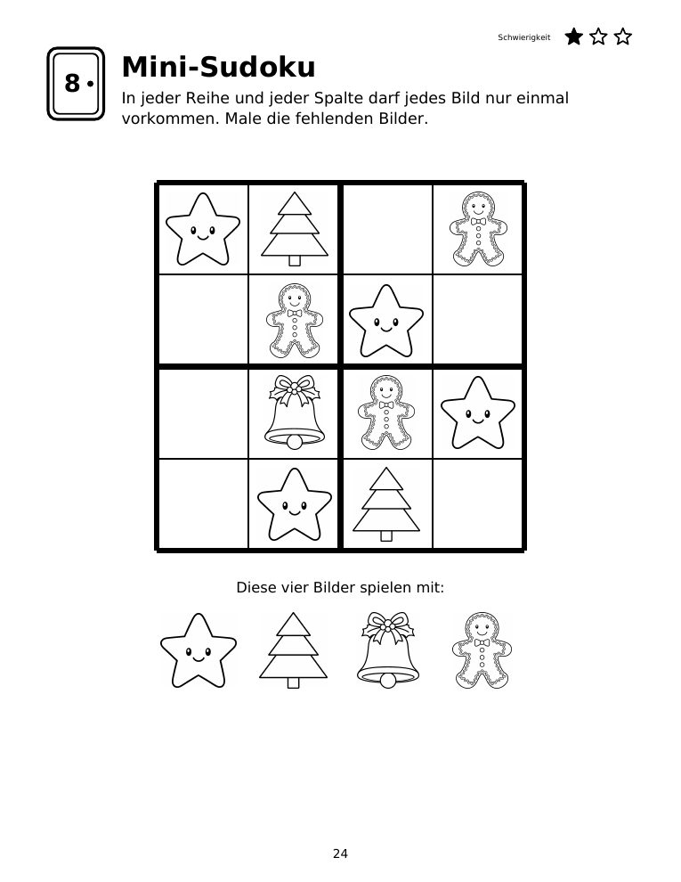

Weihnachts-Edition: Adventskalender zum Rätseln
112 Seiten · Taschenbuch · ab 5 Jahren
- 24 Türchen mit Rätsel und Zugabe
- 24 Ausmalbilder und eine Weihnachts-Werkstatt
- Rätsel für die Tage zwischen den Jahren
Drei Rätsel zum Ausdrucken für Kinder ab 5 Jahren: ein Weihnachts-Irrgarten, «Was passt nicht?» und ein Mini-Sudoku. Kostenlos, ohne Anmeldung.



So geht's: PDF öffnen, auf Papier ausdrucken (Seitengrösse an das Papier anpassen), mit Bleistift lösen und danach ausmalen. Die Rätsel sind für Vorschulkinder gedacht, am schönsten lösen Kinder sie gemeinsam mit einem Erwachsenen. Nur für den privaten Gebrauch. Illustrationen mit KI erstellt.
Diese drei Seiten stammen aus der Weihnachts-Edition. Wer jeden Tag ein neues Türchen öffnen möchte, findet dort alle Rätsel bis Weihnachten.
112 Seiten · Taschenbuch · ab 5 Jahren

308 Seiten · Taschenbuch · ab 5 Jahren